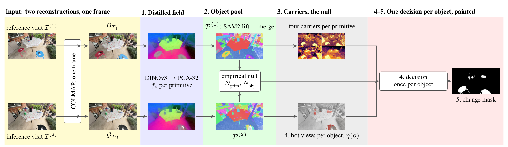
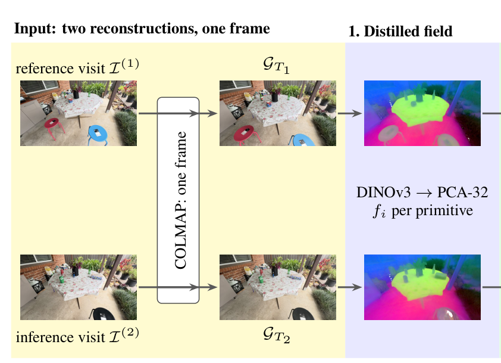
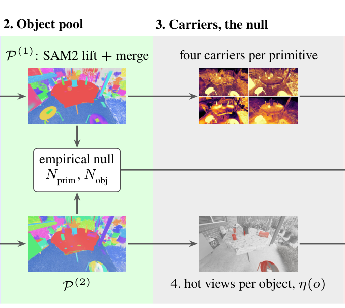
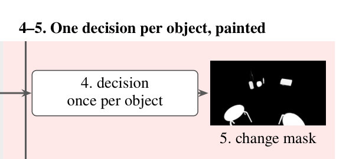
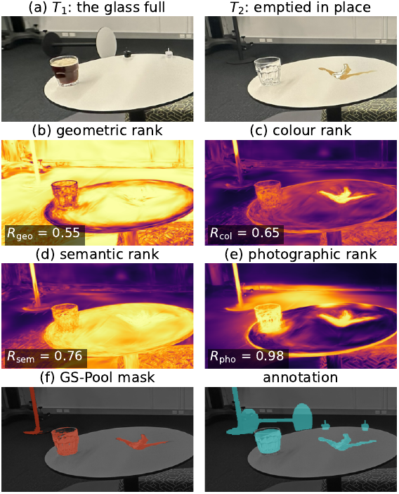

01
Decisions per object
SAM2 masks of each visit's photographs are lifted onto the Gaussians that render them and merged into an object pool, so every decision is taken once per object in 3D.
PASLCD
CL-Splats
The T1 and T2 reconstructions, and their changed primitives, red for T1 and blue for T2, over T1 in grey. PASLCD, FastPGSR, seed 22.
Swipe the video sideways to see all three panels.
Factories, museums and surveyors photograph the same space months apart and need to know which objects changed. When each visit is reconstructed with 3D Gaussian Splatting (3DGS), a direct comparison of the two reconstructions does not answer this. Training is stochastic, so two reconstructions of an unchanged space never coincide, and the second visit is often a quick re-scan with far fewer photographs. We propose GS-Pool, which takes two independently reconstructed Gaussian fields of the same space and returns the changed objects in each, together with their masks. SAM2 masks of each visit's photographs are lifted onto the Gaussians that render them and merged into an object pool, so every decision is taken once per object in 3D. We introduce a photographic carrier, the 3DGS training loss of each input reconstruction against the other visit's photographs, backpropagated to the Gaussians that rendered each pixel. We combine it with GS-Diff's geometry and colour terms and our distilled DINOv3 features. This evidence is compared with that of the objects present in both visits, which sets a change threshold for each scene.
On PASLCD, GS-Pool reaches mIoU/F1 scores of 0.751/0.846 against 0.644/0.758 for GS-Diff, the strongest prior method, a gain of 17%/12%. Its mIoU is also 36%, 40% and 57% above that of O‑SCD, PlenoCI and MV‑3DCD, and it reaches 0.855 mIoU on CL-Splats, 33% above MV‑3DCD. Each changed object is returned as a set of Gaussians with the evidence behind its decision, which an inspector can review in 3D.
SAM2 masks of each visit's photographs are lifted onto the Gaussians that render them and merged into an object pool, so every decision is taken once per object in 3D.
The 3DGS training loss of each input reconstruction against the other visit's photographs, backpropagated to the Gaussians that rendered each pixel.
This evidence is compared with that of the objects present in both visits, which sets a change threshold for each scene.
0.751 mIoU on PASLCD against 0.644 for GS-Diff and 0.846 F1 against 0.758; each of the six per-seed means on the joint frame clears the best prior result.
0.855 mIoU on CL-Splats, 33% above MV-3DCD on the same masks.




GS-Pool on one PASLCD cell: a distilled DINOv3 field per visit (1), lifted SAM2 segments merged into objects (2), four carriers per primitive and the scene's null (3), one decision per object (4), and the change mask and changed primitives (5).
Two reconstructions of the same unchanged space never coincide, because 3DGS training is stochastic and each visit is photographed along a different camera path. We refer to this difference as drift, as GS-Diff does. A difference computed between the two reconstructions therefore mixes change with drift. Unlike the primitives, the photographs that were used for training carry no reconstruction drift. GS-Pool therefore lets the reconstructions propose a set of candidate object changes directly from the primitive space, and the photographs of the other visit confirm or reject them. Geometry and colour alone can miss a different object in the same place, so we also distill a semantic field, generated from a foundation model, into the primitives. GS-Pool keeps GS-Diff's drift model, geometry and colour kernels and observability weight unchanged. We contribute:

The figure shows why the carrier is needed. A glass emptied in place keeps its shape and its position, so geometry and colour, which compare the two reconstructions with each other, cannot separate it from drift, while the photographic carrier still ranks it near the top.
Because this loss is backpropagated to the primitives, it is aggregated per object and weighed against the other carriers, which a 2D change map cannot do. MV‑3DCD, which compares each view in 2D before fusing, scores 36% below GS-Pool on PASLCD. On its own, the photographic carrier reaches 62% of the full method's score on FastPGSR, and removing it costs 12.9% on FastPGSR and 20.5% on vanilla 3DGS, the largest loss of any carrier.
| Method | Frame | mIoU | F1 |
|---|---|---|---|
| GS-Pool (FastPGSR) | joint | 0.7509 | 0.8461 |
| GS-Pool (vanilla 3DGS) | anchored | 0.7281 | 0.8266 |
| GS-Pool (FastPGSR) | anchored | 0.7260 | 0.8277 |
| GS-Pool (vanilla 3DGS) | joint | 0.7198 | 0.8209 |
| GS-Diff (FastPGSR) | joint | 0.644 | 0.758 |
| O-SCD (offline) | – | 0.552 | 0.694 |
| PlenoCI | – | 0.538 | 0.688 |
| MV-3DCD | – | 0.478 | 0.628 |
20 cells (ten scenes, two instances) with 25 annotated test views each. GS-Pool is the mean over three reconstructions. Joint is the benchmark's COLMAP solve over both captures, anchored registers the second capture into the poses of the first. Baselines are as reported.
| Method | mIoU | F1 |
|---|---|---|
| GS-Pool (vanilla 3DGS) | 0.8649 | 0.9237 |
| GS-Pool (FastPGSR) | 0.8550 | 0.9114 |
| MV-3DCD | 0.6413 | 0.7667 |
| O-SCD (offline), four of five scenes | 0.6224 | 0.7428 |
29 masks on the five real scenes of CL-Splats, annotated in PASLCD's convention. MV-3DCD and O-SCD are our runs on the same masks. O-SCD completes four of the five scenes.
| Row | Decision | FastPGSR mIoU | vanilla 3DGS mIoU |
|---|---|---|---|
| 1 | photographs alone | 0.4681 | 0.4353 |
| 2 | + semantics | 0.5899 | 0.6060 |
| 3 | all four carriers, averaged | 0.6090 | 0.6107 |
| 4 | core, F(o) > θ | 0.7034 | 0.6617 |
| 5 | + photo rank, quorum | 0.7113 | 0.6668 |
| 6 | + view statistics (full rule) | 0.7509 | 0.7198 |
The decision rule built up one component at a time on the same pools and carriers. Mean over the 60 joint-frame members per trainer. Row 6 is the full rule.
Porch from a viewpoint no camera took. The scene is either reconstruction, and each mask is the changed primitives of one visit and nothing else: the pipeline's change layer, red for what left T1 and, repainted here, blue for what arrived in T2. A mask can sit on a scene or stand alone.
Every visit is returned as a pool of objects in 3D, each with its decision, its photographic evidence and its changed primitives. Change detection becomes a question about each object, and opens the next one: what kind of change each object underwent.
Each member writes its pool record, pool.json, beside its decision trace: per visit the object counts and the core's bar
core_threshold, and per poolable object every quantity its decision reads. The listing abridges one member's record,
Garden of the teaser, to three objects of T1 and the one changed object of T2
(pool_example.json), values rounded to four places. The pool lists only the objects the rule judges; the background is left out.
{
"member": "Garden_i1, FastPGSR, joint frame, seed 22",
"gspool_version": "1.2",
"T1": {
"objects": 170,
"poolable_objects": 126,
"changed_objects": 9,
"core_threshold": 22.1468,
"pool": [
{
"object_id": 31,
"covered_primitives": 534,
"extent_primitives": 534,
"carrier_ranks": {"colour": 0.9889, "geometry": 0.9993, "photographs": 0.9995, "semantics": 0.9981},
"core_statistic": 36.1743,
"core_admits": true,
"photographs_observing": 25,
"hot_view_share": 1.0,
"above_median_share": 1.0,
"carriers_agree": true,
"semantic_exemption": true,
"admitted": true,
"rejected_by_photographs": false,
"changed": true
},
{
"object_id": 82,
"covered_primitives": 36,
"extent_primitives": 36,
"carrier_ranks": {"colour": 0.8679, "geometry": 0.9952, "photographs": 0.5545, "semantics": 0.4205},
"core_statistic": 23.2204,
"core_admits": true,
"photographs_observing": 17,
"hot_view_share": 0.1176,
"above_median_share": 0.1765,
"carriers_agree": true,
"semantic_exemption": false,
"admitted": true,
"rejected_by_photographs": true,
"changed": false
},
{
"object_id": 3,
"covered_primitives": 8100,
"extent_primitives": 3389,
"carrier_ranks": {"colour": 0.4059, "geometry": 0.7603, "photographs": 0.7226, "semantics": 0.089},
"core_statistic": 3.5916,
"core_admits": false,
"photographs_observing": 25,
"hot_view_share": 0.0,
"above_median_share": 0.96,
"carriers_agree": false,
"semantic_exemption": false,
"admitted": false,
"rejected_by_photographs": false,
"changed": false
}
]
},
"T2": {
"objects": 168,
"poolable_objects": 125,
"changed_objects": 1,
"core_threshold": 23.8048,
"pool": [
{
"object_id": 11,
"covered_primitives": 413,
"extent_primitives": 413,
"carrier_ranks": {"colour": 0.9988, "geometry": 0.9999, "photographs": 0.9997, "semantics": 0.981},
"core_statistic": 36.431,
"core_admits": true,
"photographs_observing": 60,
"hot_view_share": 1.0,
"above_median_share": 1.0,
"carriers_agree": true,
"semantic_exemption": true,
"admitted": true,
"rejected_by_photographs": false,
"changed": true
}
]
}
}
covered_primitives is the object's primitives inside at least two camera frusta of the other visit,
carrier_ranks its four ranks against the scene's null, core_statistic the core's statistic against the bar,
photographs_observing the number of photographs that observe the object, hot_view_share and
above_median_share its two photographic shares, carriers_agree the quorum, rejected_by_photographs
the photographs' overrule, and extent_primitives the primitives a changed object paints.
Beside it the release keeps the pool as arrays, pool_T1.npz and pool_T2.npz (each primitive's object), and the changed
primitives as PLY layers.
GS-Pool takes all its evidence from the reconstructions and photographs, so a poor capture degrades it. GS-Pool's objects come from SAM2, so a change that SAM2 does not segment as a separate mask cannot be recovered by later stages. A change of lighting alone still produces false alarms, although on two captures of an unchanged scene under different lighting GS-Pool flags fewer pixels than MV‑3DCD and O‑SCD run from their released code. The distilled field, SAM2 lifting and renders at the other visit's cameras also make GS-Pool costlier than comparing the two primitive sets alone.
@article{kerengil2026gspool,
title = {GS-Pool: Object-Level Change Detection in 3D Gaussian Splatting},
author = {Keren-Gil, Boaz and Gain, James and Marais, Patrick},
journal = {arXiv preprint arXiv:2610.06688},
year = {2026}
}